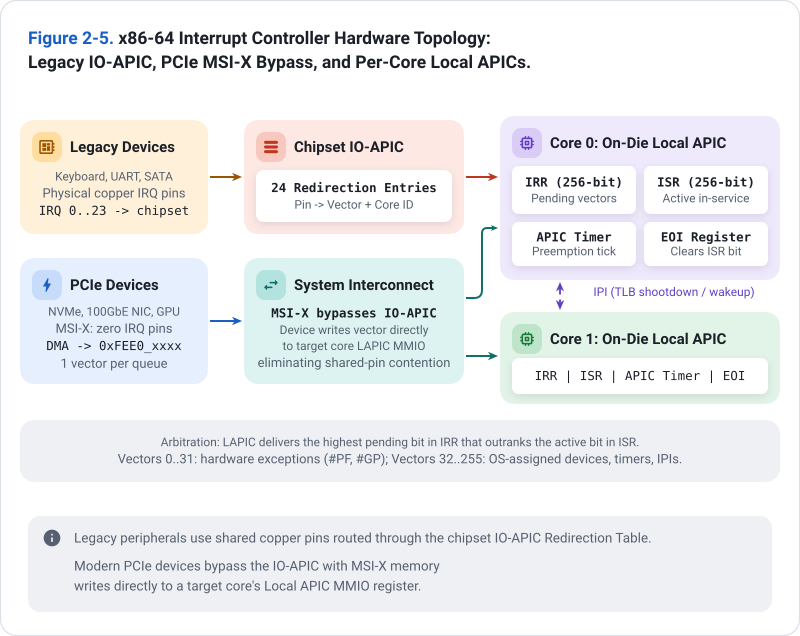

2. The Architectural Substrate and Execution Constraints
An operating system is not an arbitrary collection of software abstractions; every mechanism inside a kernel exists to answer a specific constraint of physical silicon. Understanding how a processor fetches instructions, how it talks to memory and external devices, why it separates user code from kernel code, and how hardware interrupts pause a running program gives you a permanent mental model for every chapter that follows.
Throughout this chapter, we build each mechanism from first principles: first the concrete physical problem, then how hardware solves it, and finally the exact x86-64 and ARM64 register names summarized in reference tables rather than stacked into prose.
2.1 The Execution Model and the Atomicity Gap
At its core, a processor executes a relentless loop: fetch the next machine instruction from memory, decode what operation it requests, execute that operation on values held in tiny on-chip storage slots called registers, and write the result back.
Because registers live directly inside the processor’s execution circuitry, reading a register takes roughly one clock cycle (about 0.3 nanoseconds), whereas reading main memory takes hundreds of cycles. Everything the processor needs to know about a running thread at any frozen instant fits inside five categories of registers:
- The Program Counter: Holds the memory address of the next machine instruction to fetch. Normally, the processor advances this counter automatically after each instruction; branches, function calls, system calls, and interrupts change execution flow by overwriting this single register with a new target address.
- The Stack Pointer: Points to the top (lowest active address) of the thread’s call stack in memory. On both x86-64 and ARM64, the call stack grows downward toward smaller memory addresses: allocating local variables subtracts from the stack pointer, and returning from a function adds back to it. Modern calling conventions require the stack pointer to stay aligned to a 16-byte multiple at function call boundaries so wide vector loads and stores never straddle misaligned boundaries.
- The Frame Pointer: Anchors the base of the current function’s stack frame. While the stack pointer moves up and down as a function pushes temporary values, the frame pointer stays fixed from function entry until return. When function
Acalls functionB,BsavesA’s frame pointer on the stack right next to the return address and points its own frame pointer there. This creates a linked chain of saved frame pointers all the way back tomain(), allowing debuggers and profilers to reconstruct a complete call stack in a few pointer hops. - Processor Status Flags: A compact register of single-bit flags recording outcomes of recent arithmetic instructions (such as whether the last subtraction produced zero, a negative result, or an overflow) alongside privileged control bits. The single most important control bit for operating systems is the interrupt enable bit: when cleared to
0, the core temporarily defers external hardware interrupts until the kernel finishes a delicate state update. - General-Purpose Registers: Fast scratchpad registers (16 on x86-64; 31 on ARM64) used for arithmetic, pointers, and passing function arguments. By calling-convention agreement between the compiler and the operating system, some registers are caller-saved (a called function may overwrite them freely) and others are callee-saved (a called function must preserve their original values before returning).
Table 2-1. Architectural register mapping across x86-64 and ARM64.
| Conceptual Role | x86-64 Register | ARM64 (AArch64) Register |
|---|---|---|
| Program Counter | RIP | PC |
| Stack Pointer | RSP | SP (SP_EL0 in user mode, SP_EL1 in kernel) |
| Frame Pointer | RBP | x29 (FP) |
| Return Address Storage | Pushed onto stack by CALL | Saved in Link Register x30 (LR) by BL |
| Status & Interrupt Mask | RFLAGS (Interrupt Flag IF, bit 9) | PSTATE (Interrupt mask bits DAIF) |
| Integer Argument Registers | RDI, RSI, RDX, RCX, R8, R9 (first 6) | x0 through x7 (first 8) |

2.1.1 The Fetch-Decode-Execute Datapath and Function Activation Records
To hide memory latency and execute multiple instructions per clock cycle, a modern core organizes execution into four pipeline stages:
- Fetch: Read the next instruction bytes from the L1 instruction cache using the Program Counter.
- Decode: Interpret the instruction opcode and map its operand registers onto internal physical registers so independent instructions can execute concurrently out of order.
- Execute and Memory Access: Perform arithmetic in the Arithmetic Logic Unit (ALU) or compute a memory address, check the address translation cache (TLB) and L1 data cache, and place outgoing writes into a small hardware store buffer while awaiting cache ownership.
- Retire (Commit): Even though instructions execute out of order internally for speed, a hardware reorder buffer commits their results to visible registers and caches in strict original program order. If an earlier instruction faults (for example, dividing by zero or touching an unmapped page), all younger speculative instructions are cleanly discarded.
Whenever a program calls a function, the caller and callee cooperate to construct a stack frame (activation record) in memory (Figure 2-3). First, the caller places integer arguments into the designated argument registers. Next, the call instruction records the return address (pushed onto the stack on x86-64; placed in the Link Register x30 on ARM64) and jumps to the callee. The callee’s prologue saves the caller’s frame pointer, sets its own frame pointer to the base of the new frame, preserves any callee-saved registers it plans to modify, and subtracts from the stack pointer to carve out space for local variables. When the function returns, the epilogue reverses those exact steps and jumps back to the saved return address.

2.1.2 Formal Derivation of the Atomicity Gap
The hardware reorder buffer guarantees that a single core sees its own instructions take effect in program order. It makes no guarantee that a high-level language statement executes as one indivisible step across multiple cores. That mismatch defines the atomicity gap.
Suppose two CPU cores concurrently execute counter++ on a shared 64-bit integer currently holding 42. A processor core cannot add 1 directly inside a DRAM chip; it must copy the number into a private register, increment the register, and store the new value back to memory. The compiler therefore emits three separate machine instructions:
// x86-64 Read-Modify-Write // ARM64 Read-Modify-Write
1. mov rax, QWORD PTR [rip + counter] 1. ldr x0, [x1] // Load 42 into private register
2. add rax, 1 2. add x0, x0, #1 // Compute 43 inside local ALU
3. mov QWORD PTR [rip + counter], rax 3. str x0, [x1] // Store 43 back to shared cache line
Because both cores run in parallel, their three steps interleave freely:
- Core 0 executes Step 1 and loads
42into its private register. - Core 1 executes Step 1 before Core 0 finishes, also loading
42. - Both cores compute
43independently in their local ALUs. - Core 0 executes Step 3 and stores
43to memory. - Core 1 executes Step 3 and overwrites memory with
43.
Two increments ran, yet the counter advanced from 42 to 43 instead of 44. One update vanished permanently, a failure called a lost update. Closing the atomicity gap requires either special hardware atomic instructions that lock a cache line across the entire read-modify-write cycle (lock xadd on x86-64; ldaddal or load-linked/store-conditional pairs on ARM64) or kernel-backed synchronization locks, both explored in Chapters 4 and 6.
2.2 Memory Hierarchy and Locality Dynamics
Main memory (DRAM) is huge and inexpensive, but physically slow compared to a multi-gigahertz processor core: waiting 70 to 100 nanoseconds for a single DRAM read stalls a 3 GHz core for more than 200 clock cycles. Hardware bridges this speed gap with a staircase of progressively smaller, faster on-chip SRAM caches:
- Registers: ~0.3 ns (1 cycle), tens of words per core.
- L1 Cache (split instruction and data): ~1 ns (3 to 4 cycles), 32 to 64 KiB private per core.
- L2 Cache: ~3 to 5 ns (10 to 14 cycles), 256 KiB to 4 MiB private per core.
- L3 / System-Level Cache: ~12 to 20 ns (35 to 55 cycles), 8 to 128 MiB shared across cores.
- Main DRAM: ~60 to 100 ns (200+ cycles), gigabytes to terabytes.
Caches work because real programs exhibit two empirical access patterns: temporal locality (an address accessed now, such as a loop variable or stack slot, is likely to be accessed again soon) and spatial locality (addresses near a recently accessed byte, such as consecutive array elements, are likely to be accessed next).
To exploit spatial locality, hardware never fetches a single byte from DRAM. It transfers memory in fixed 64-byte cache lines (128 bytes on some ARM64 processors). Walking sequentially through a contiguous array brings 8 consecutive 64-bit integers into L1 on the first miss, and the hardware prefetcher notices the pattern and fetches upcoming lines before the CPU asks for them. Conversely, chasing pointers across scattered heap objects defeats prefetching and stalls on DRAM repeatedly.
Managing coherence at 64-byte granularity also creates a subtle multi-core hazard called false sharing: if Core 0 writes to counter_a and Core 1 writes to a completely unrelated counter_b that happens to sit inside the same 64-byte cache line, the hardware coherence protocol (MESI) must bounce exclusive ownership of that entire 64-byte line back and forth between cores on every write, collapsing parallel performance (measured empirically in Chapter 17).
2.3 Privilege Domains and How the CPU Talks to Hardware Devices
If every program could disable interrupts, reprogram page tables, or write directly to disk hardware, a single buggy application could destroy every other process on the machine. Processors prevent this by dividing execution into hardware-enforced privilege levels:
- User Mode (
Ring 3on x86-64;EL0on ARM64): Where normal applications run. The processor blocks privileged instructions, restricts memory accesses to pages marked user-accessible in the process’s page table, and forbids direct access to hardware devices. Any violation triggers an immediate hardware trap into the kernel. - Kernel Mode (
Ring 0on x86-64;EL1on ARM64): Where the operating system kernel runs with full control over page tables, interrupt controllers, timers, and I/O devices. Modern CPUs also add a higher hypervisor level (VMX Rooton x86-64;EL2on ARM64, covered in Chapter 16) for running virtual machines.

2.3.1 Two Physical Mechanisms Behind Every Device: MMIO and DMA
Before studying how hardware devices interrupt the CPU, two deceptively simple hardware ideas must be crystal clear, because every disk driver, network card, and interrupt controller in the rest of this book is built on them:
- Memory-Mapped I/O (MMIO): How the CPU sends commands to a hardware device.
A CPU core only knows how to execute load and store instructions against memory addresses. How, then, does the kernel tell an SSD controller to read sector 42, or tell an interrupt controller to mask a pin? Hardware designers carve out reserved ranges of the physical address space that are not connected to DRAM chips; instead, the motherboard’s memory controller wires those physical addresses directly to control registers inside hardware devices. When the kernel (in Ring 0) writes a 32-bit command to physical address
0xFEE0_00B0, no RAM chip is touched: the electrical write travels over the bus straight into a register inside the interrupt controller. Because user-mode page tables never map MMIO physical ranges, applications cannot touch hardware directly. - Direct Memory Access (DMA): How a hardware device moves bulk data without tying up the CPU.
Suppose an application reads a 100 MiB file from an NVMe solid-state drive. If the CPU core had to copy all 100 million bytes one 8-byte register at a time from the drive into DRAM, the core would be completely paralyzed for the entire transfer. Instead, modern devices include a DMA engine that can read and write physical DRAM directly over the PCIe bus. The kernel places a descriptor in memory saying “read 4 KiB from disk block 900 and write the bytes into physical DRAM address
0x1000_8000,” rings the drive’s MMIO doorbell register once, and immediately switches the CPU core to run other user threads. While the CPU does useful work, the NVMe controller streams all 4,096 bytes straight into DRAM on its own. Once the final byte lands in DRAM, the drive needs one last thing: a way to tap the CPU on the shoulder and announce “your 4 KiB block is ready.” That shoulder tap is a hardware interrupt.
2.4 Synchronous Traps and the Asynchronous Interrupt Subsystem
Control transfers from User Mode into Kernel Mode fall into two fundamentally different categories depending on what caused them:
- Synchronous Traps and Exceptions: Caused directly by the instruction the CPU core is executing right now. Because the event is tied to that exact instruction, it is deterministic and repeatable. Synchronous entries include intentional system calls (
syscall/svc #0, Chapter 9), recoverable faults (such as a page fault when a program touches a valid but not-yet-loaded virtual page, where the kernel maps a frame and re-runs the exact same instruction), and fatal exceptions (such as dividing by zero or reading an invalid pointer). - Asynchronous Hardware Interrupts: Caused by an external physical event outside the CPU’s instruction stream: an NVMe drive finishing a DMA block read, a network card receiving an Ethernet packet, a keyboard key press, or a hardware timer ticking down to zero. An asynchronous interrupt can arrive between any two instructions of whatever arbitrary user program happens to be running on that core.
2.4.1 Why Interrupt Controllers Exist: From One Copper Pin to Multi-Core Fabrics
To build permanent intuition for modern interrupt controllers without memorizing disconnected acronyms, start from the physical wiring problem hardware architects faced as computers grew from 1 core to 64+ cores.
Early single-core PCs had literally one physical interrupt wire entering the CPU package. A small helper chip on the motherboard gathered eight physical copper wires from peripherals (timer, keyboard, disk, serial port), picked the highest-priority active wire, and raised that one wire into the CPU.
Now imagine trying to scale that design to a modern 64-core server with an NVMe drive, a 100-gigabit network card, and a GPU completing millions of operations per second. Three physical walls immediately break the single-wire model:
- Copper wire scarcity and shared-line storms: You cannot run 500 physical copper interrupt pins across a motherboard. If four devices share one copper wire, the kernel has no idea which device raised the voltage and must wake all four drivers to check their status registers on every single interrupt.
- Per-core routing (cache locality): A modern network card maintains 16 separate receive queues so 16 CPU cores can process incoming packets in parallel without locks. You want Receive Queue 4 to interrupt Core 4 specifically (whose L1/L2 cache already holds Queue 4’s data structures), not wake a random core.
- Core-to-core doorbells: CPU cores themselves need a way to interrupt each other directly in hardware, for example when Core 0 unmaps a shared memory page and must force Cores 1 through 63 to immediately discard stale cached address translations.
Once you see those three physical problems, every piece of both x86-64 and ARM64 interrupt hardware falls into place naturally. There are only four kinds of interrupts any multi-core chip needs to route:
- Shared wired legacy devices (a keyboard, serial console, or platform controller wired to the whole machine).
- High-speed PCIe devices (NVMe drives, 100GbE NICs, GPUs) needing dedicated, contention-free lanes directly to specific CPU cores.
- Core-private timers (each core needs its own private countdown clock so the OS scheduler can preempt threads on every core independently without fighting over one global timer).
- Core-to-core doorbells (one core sending an urgent signal to sibling cores for TLB flushes or scheduler wakeups).
How x86-64 Implements These Four Paths (IO-APIC, MSI-X, and Local APIC)
Intel and AMD split interrupt routing across the motherboard chipset and a small Local Interrupt Controller (Local APIC) built directly inside the silicon die of every CPU core (Figure 2-4).

- Routing legacy wired pins (the Chipset IO-APIC): Legacy peripherals still connect via physical copper wires to a chipset component called the IO-APIC (Input/Output Advanced Programmable Interrupt Controller). Inside the IO-APIC sits a tiny programmable lookup table of 24 (or more) Redirection Table Entries. At boot, the OS writes one row per physical wire telling the IO-APIC two things: “when wire
kgoes high, attach 8-bit interrupt numberv(chosen from32..255, because numbers0..31are permanently reserved by the CPU for internal exceptions like divide-by-zero and page faults) and mail it over the bus to CoreN.” - Deriving Message Signaled Interrupts (MSI-X) from DMA and MMIO: Applying the two mechanisms from Section 2.3.1 eliminates physical interrupt wires completely. A modern PCIe NVMe drive can already write bytes to any physical address over the PCIe bus via DMA, and every CPU core’s Local APIC already listens on a reserved physical MMIO address (
0xFEE0_0000, encoding the target core ID in its upper address bits). Hardware designers realized that running copper interrupt wires from PCIe cards to the IO-APIC was unnecessary: the PCIe device signals an interrupt by performing a 4-byte DMA memory write straight to the target core’s Local APIC MMIO address, carrying the interrupt vector number (32..255) as the 4-byte data value. This mechanism is called MSI-X (Message Signaled Interrupts Extended). It bypasses the chipset IO-APIC completely, supports up to 2,048 distinct vectors per PCIe card, eliminates shared-wire storms, and pins each NIC or NVMe queue directly to its own CPU core. Even better, because PCIe strictly orders DMA writes, the device’s data bytes are guaranteed to have landed in DRAM before its 4-byte MSI-X write arrives at the Local APIC. - Inside every CPU core (the Local APIC,
IRR,ISR, andEOI): Every CPU core contains its own on-die Local APIC that receives all four interrupt feeds: routed messages from the IO-APIC, direct MSI-X writes from PCIe cards, Inter-Processor Interrupts (IPIs) mailed by sibling cores, and ticks from its own private APIC Timer.- Why does the Local APIC need two 256-bit bitmaps (
IRRandISR)? Imagine an NVMe interrupt (0x30) arrives on Core 0 while Core 0 is already halfway through handling a lower-priority keyboard interrupt (0x21), and a third interrupt arrives a microsecond later. To track both what is waiting and what is currently running without losing a single signal, the Local APIC maintains two 256-bit registers (one bit per vector0..255):- The Pending Bitmap (Interrupt Request Register,
IRR) sets bitv = 1the instant vectorvarrives at the core. - The Active Bitmap (In-Service Register,
ISR) records which vector’s handler Core 0 is currently executing.
- The Pending Bitmap (Interrupt Request Register,
- Hardware continuously compares the highest-priority bit set in
IRRagainst the highest bit set inISR. Only when a waiting interrupt inIRRoutranks the currently active interrupt inISR(and the core’s interrupt-enable flag is1) does the Local APIC move bitvfromIRRtoISRand interrupt the core. Once the OS handler finishes talking to the device, it writes0to the Local APIC’s End-of-Interrupt (EOI) MMIO register. That single write clears the active bit inISR, signaling that Core 0 is ready for the next waiting interrupt fromIRR.
- Why does the Local APIC need two 256-bit bitmaps (
How ARM64 Implements the Exact Same Four Paths (GICv3 / GICv4)
ARM64 server and mobile chips solve the exact same four physical routing problems using the Generic Interrupt Controller (GICv3 / GICv4) (Figure 2-5). Instead of memorizing ARM acronyms in isolation, map each piece directly onto the four physical roles you already understand:

- Chip-wide wired devices: Routed by the central Distributor (
GICD), the ARM counterpart to x86-64’s IO-APIC. ARM labels these wired chip-wide lines Shared Peripheral Interrupts (SPI, IDs32..1019). - High-speed PCIe MSI-X writes: Translated by the Interrupt Translation Service (
ITS), which intercepts PCIe DMA doorbell writes and maps(DeviceID, EventID)to a scalable RAM-backed table of Locality-Specific Peripheral Interrupts (LPI, IDs8192+) targeting a chosen core. - Per-core arbitration and private interrupts: Every ARM64 core owns a private Redistributor (
GICR) (analogous to per-core Local APIC state). Each Redistributor locally tracks core-private Software Generated Interrupts (SGI, IDs0..15, ARM’s name for cross-core IPIs) and Private Peripheral Interrupts (PPI, IDs16..31, such as each core’s local ARM Generic Timer), merging them with incoming SPIs and LPIs for that core. - Fast register handshake with the core: Rather than forcing the kernel to do slower uncached MMIO reads on every interrupt, GICv3 exposes each core’s CPU Interface as fast architectural system registers: the kernel reads
ICC_IAR1_EL1to learn which interrupt ID won arbitration and writesICC_EOIR1_EL1when finished to signal End of Interrupt.
Table 2-2. Side-by-side mental map: physical interrupt role to x86-64 and ARM64 hardware names.
| Physical Hardware Need | x86-64 (APIC) | ARM64 (GICv3 / GICv4) |
|---|---|---|
| Shared wired peripheral lines | Chipset IO-APIC (RTE -> Vectors 32..255) | Distributor (GICD) -> SPI (IDs 32..1019) |
| High-speed PCIe DMA interrupts | MSI-X write straight to core LAPIC MMIO | ITS translates DMA write -> LPI (IDs 8192+) |
| Core-private preemption timer | Per-core Local APIC Timer | Per-core Redistributor (GICR) PPI (IDs 16..31) |
| Core-to-core doorbell (TLB flush) | IPI (Inter-Processor Interrupt) | SGI (Software Generated Interrupt, IDs 0..15) |
| End-of-Interrupt handshake | Write 0 to Local APIC EOI register | Write winning ID to ICC_EOIR1_EL1 register |
2.4.2 Vector Tables (IDT, VBAR_EL1), TSS.rsp0, and Hardware Trapframe Construction
Now trace what happens on the exact clock cycle Core 0’s Local APIC accepts Vector 0x30 (our NVMe disk completion) while Core 0 is executing a user application in Ring 3. Before a single line of C or Rust kernel code can run, CPU silicon must solve two concrete problems atomically:
- Where is the kernel function that handles Vector
0x30? - Where can the CPU safely save the interrupted user program’s registers so it can resume later without corrupting anything?
Why can CPU silicon never push the interrupted user program’s registers onto the application’s own user stack? Because user-mode code controls the user stack pointer (RSP): a buggy or malicious program can set RSP = 0, point RSP into read-only memory, or point RSP directly into kernel memory. Attempting to push a hardware return frame onto an untrusted user stack would crash or compromise the kernel immediately. Hardware must therefore switch to a clean, kernel-owned stack first (Figure 2-6).

On x86-64, hardware executes four steps atomically before fetching the first instruction of the kernel handler:
- Look up the handler in the Interrupt Descriptor Table (
IDT): During boot, the OS builds an array of 256 16-byte descriptors in kernel memory called the IDT and loads its address into the CPU’s privilegedIDTRregister. When Vector0x30arrives, silicon reads entryIDT[0x30], extracting the 64-bit kernel handler address, the target privilege level (Ring 0), and the gate type (an Interrupt Gate automatically clears the interrupt-enable flagRFLAGS.IF = 0so a second interrupt cannot disrupt entry while the frame is half-built). - Switch from the untrusted user stack to the thread’s kernel stack (
TSS.rsp0): Seeing that Core 0 was running in Ring 3 whileIDT[0x30]runs in Ring 0, silicon reads a small per-core kernel descriptor called the Task State Segment (TSS) and loads a trusted kernel stack pointer fromTSS.rsp0(which the OS scheduler keeps pointed to the top of the current thread’s private 8 to 16 KiB kernel stack). For emergency faults where even the regular kernel stack may have overflowed (such as a Double Fault#DFor Non-Maskable Interrupt#NMI),IDT[v]points to an isolated backup stack inTSS.ist[1..7]. - Push the 5-word hardware return frame onto the kernel stack: Silicon automatically saves the five architectural values needed to resume the interrupted user thread later: User Stack Segment (
SS), User Stack Pointer (RSP), Processor Flags (RFLAGS), Code Segment (CS, recording that the thread came from Ring 3), and the exact interrupted Instruction Pointer (RIP). For certain synchronous faults (such as a page fault#PF), silicon pushes a 6th word: an Error Code describing whether the fault was caused by a read, a write, or a permission check. - Save the remaining general-purpose registers in software (
struct pt_regs): Silicon jumps to the kernel assembly entry stub atIDT[0x30], which pushes all general-purpose registers (RAXthroughR15) onto the kernel stack right below the hardware frame. That complete snapshot is the trapframe (struct pt_regs). Normal C or Rust kernel code can now execute freely using standard registers without disturbing a single bit of the user thread’s saved state.
On ARM64, silicon performs the exact same isolation using dedicated exception registers rather than pushing to memory in hardware: elevating from EL0 to EL1 automatically switches the stack pointer from SP_EL0 to the kernel’s SP_EL1, masks further IRQs, saves the interrupted program counter in ELR_EL1 and flags in SPSR_EL1, records the cause in ESR_EL1, and jumps into a 128-byte vector slot inside the table pointed to by VBAR_EL1, where the kernel stub saves x0 through x30 onto SP_EL1.
2.4.3 Top-Half (hardirq) vs. Bottom-Half (softirq) Split and EOI Lifecycle
Once inside the kernel’s interrupt handler, two hard constraints govern what the handler is allowed to do:
- An interrupt handler can never sleep or wait on a mutex. The interrupt preempted whatever innocent user thread happened to be running on Core 0 at that instant. Calling
sleep()or blocking on a lock would put that unrelated user thread to sleep; even worse, if that exact interrupted thread already held that lock when the interrupt fired, Core 0 would deadlock with itself forever. - An interrupt handler must finish in a few microseconds. While local interrupts are masked (
IF == 0) and the vector’s active bit sits in the Local APIC’sISR, Core 0 cannot service other incoming interrupts. Spending milliseconds walking TCP tables or checking filesystem metadata inside a masked handler causes dropped network packets, audio glitches, and missed timer ticks.
To resolve this conflict, every modern kernel splits interrupt work into two distinct phases (Figure 2-7):

- Top-Half (
hardirq, Interrupts Masked, Microseconds): Runs immediately upon vector dispatch and performs only the urgent hardware handshake that cannot wait: reads the device’s status register, advances the hardware DMA ring pointers so the device can continue receiving packets or disk blocks, marks a deferred-work flag in kernel memory, and writes End of Interrupt (EOI) to the Local APIC (orICC_EOIR1_EL1on ARM64). Writing EOI clears the active bit inISRso the interrupt controller can immediately deliver new events. - Bottom-Half (
softirq, NAPI, and Workqueues, Interrupts Re-Enabled): Runs right after the top-half finishes, with hardware interrupts turned back on (IF == 1) so urgent hardware signals can preempt heavy software processing cleanly:- Deferred lock-free processing (
softirqand NAPI): In Linux, heavy non-blocking work such as TCP/IP packet parsing (NET_RX_SOFTIRQ), block storage completions (BLOCK_SOFTIRQ), and timer expirations (TIMER_SOFTIRQ) runs immediately before returning to user space (or spills onto per-CPUksoftirqdkernel threads under heavy traffic storms). Under 100GbE packet rates, Linux NAPI intentionally switches a busy network card from one-interrupt-per-packet to batched polling insideNET_RX_SOFTIRQso the core spends its cycles processing packets rather than drowning in interrupt entry overhead. - Work that needs to sleep (
workqueuesand Threaded IRQs): Any driver task that must acquire sleeping mutexes or wait on secondary I/O is handed off to a normal schedulable kernel thread (kworkeror a threaded IRQ handler), which has its own Process Control Block and can block safely.
- Deferred lock-free processing (
Finally, before leaving kernel mode, the exit path checks whether the interrupt woke up a higher-priority runnable thread (for example, a blocked web server whose network packet has arrived). If preemption is needed, the scheduler switches stacks to that thread. Otherwise, the exit stub restores RAX..R15 from the trapframe and executes iretq (x86-64) or eret (ARM64), which atomically pops the saved RIP, CS, RFLAGS, RSP, and SS, re-enables interrupts, and resumes the interrupted user program at the exact instruction where it paused.